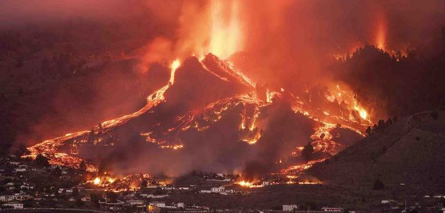

Sergio Leal Priere
Se trata del único municipio de la isla de La Palma que carece de costa. Limita con todos los municipios de la isla excepto Tazacorte. Tiene una extensión de 135,92 km² (siendo el municipio más extenso de la isla de La Palma) y una población que a enero de 2016 era de 7457 habitantes (INE).

Por desgracia Hubo un volcan que destruyó muchas casas.
